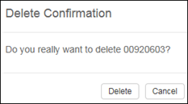

Note: It is not possible to delete the last user who has Read and Write permission to
Privileges.
-
Click the
 Delete
icon
in the User Group Details
pane.
A confirmation dialog appears.
Delete
icon
in the User Group Details
pane.
A confirmation dialog appears.